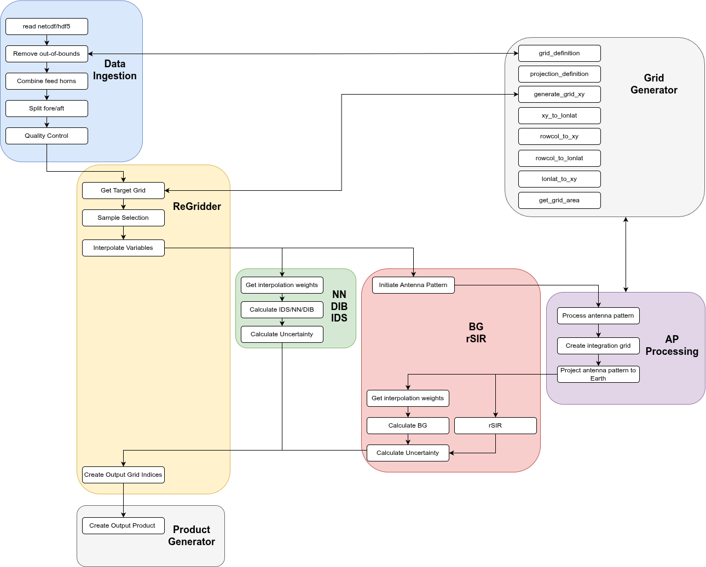
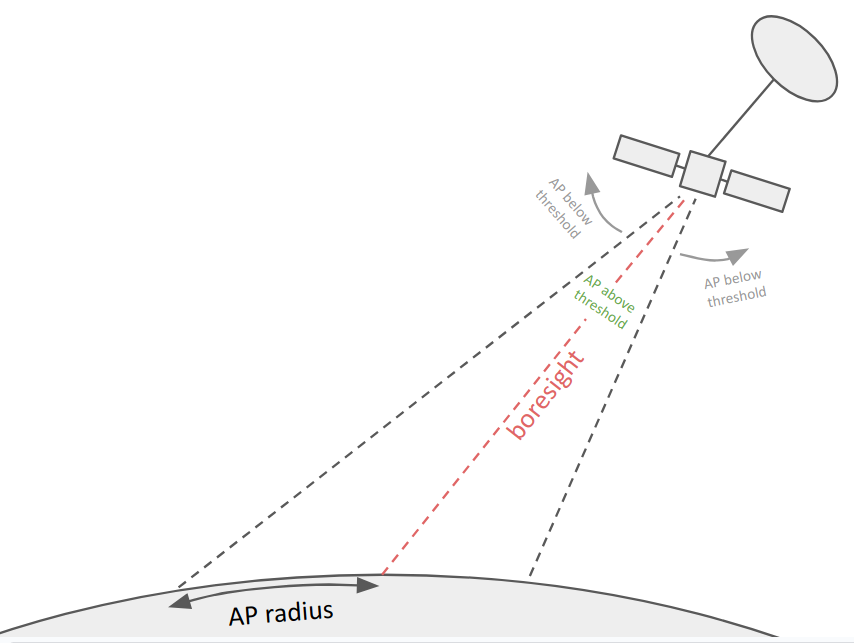
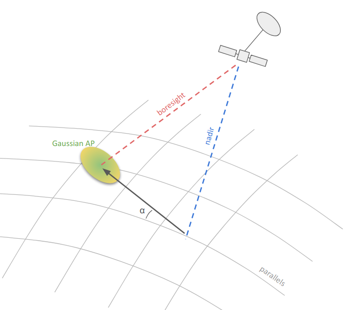

5. Implementation#
5.1. Algorithm Flow#
The toolbox is governed and initiated by use of a configuration file, which provides users with a variety of options. Fig. 5.1 depicts the flow of data through the toolbox. The white boxes indicate functions that sit within the coloured processing modules. The toolbox has been designed such that input data types, ingestion functionality, regridding algorithms, and modular functionality, in general, can be added relatively easily. It is also intended that the modules can be used independently or outside the main pipeline.


Fig. 5.1 CIMR RGB Data Flow#
As can be seen from Fig. 5.1, there are no corrections implemented on the data, such as land/water contamination, atmospheric, Faraday rotation etc.
5.2. Points Selection#
The points selection algorithm lies within the ReGridder module and utilises the pyresample python library. The search radius and the number of neighbours desired are user-configurable. pyresample calculates orthodromic distances of the Earth’s surface based on spherical geometry. At the time of writing, the points selected for use in the regridding algorithm are based solely on the proximity to the target location, as opposed to considering scan numbers or feed horn numbers when selecting points.
5.3. Initializing Antenna Patterns#
Antenna patterns need to be initialised before being projected to the Earth’s surface.
The functional shape of the antenna pattern in spherical coordinates is decided based on the chosen projection method (see Section 5.5)
All values for the gain \(\theta\) > \(\theta_{max}\) are set to zero (where the parameter \(\theta_{max}\) is configurable by the user, and a value of \(40^\circ\) is recommended (and applied as default), as usually, no feedhorn has a significant value of gain at such an angle).
All values of gain smaller than a user-defined threshold are set to zero.
The remaining gains are passed through the RGB software for projection to the Earth, normalisation occurs after projection.
An antenna pattern radius (used to size the integration domain) is defined by estimating the largest radius on Earth where the gain is non-zero (i.e. above the threshold), as shown in Fig. 5.2.


Fig. 5.2 Sketch of the procedure to estimate the maximum AP radius. This provides an upper limit to the size of the integration domain. First, the boresight of the antenna feedhorn is intersected with the Earth’s surface. The distance on Earth between the boresight location and furthest point with above-threshold projected gain is then measured. The Earth is assumed to be a sphere in this calculation.#
Antenna patterns are fully characterised by four values of the gain: H-pol cross-pol, H-pol co-pol, V-pol cross-pol, V-pol co-pol. These four values allow the definition of a 4x4 Mueller matrix, which is required to compute the full response of the optical system to the incoming polarised radiation. Due to the additional computational cost of projecting the full Mueller matrix to Earth, a scalar value of the gain is derived by averaging the cross and co-polarisation terms. The full Mueller matrix is expressed as:
where \(Re\) and \(Im\) represent the real and imaginary components respectively. The total scalar gain measured for incoming H-polarized radiation is \(G_H = \sqrt{G_{hh} + G_{hv}}\) and similarly for the gain measured for incoming V-polarized radiation \(G_V = \sqrt{G_{vv} + G_{vh}}\). Thus, the scalar gain can be estimated as an average of H and V modes:
5.4. Image Domain/Integration Grid#
A temporary integration grid is used for calculations involving projected antenna patterns. This is required by the following algorithms:
BG/rSIR: for each output grid cell (L1C) or output antenna pattern (L1R), the neighbouring antenna patterns are projected to the integration grid such that the integrals in Section 4.4.5 can be computed; the size of the integration grid is such that all projected patterns fit in the grid, taking into account their radius (estimated as explained in Section 5.3, point 5).
Since the integration grid is needed only for the purpose of performing intermediate calculations, it is not required to be of the same type as the user-selected output grid. For this reason, we chose an EASE2 grid for this purpose, which has a mathematically simple definition and is convenient for computing integrals being an equal-area projection.
The resolution of the integration grid can be configured by the user. It must be fine enough to resolve the projection of the antenna patterns of the source band (and of the target band for L1B→L1R), while the computational cost increases with the number of integration cells.
The recommended spacing per band was determined by a convergence test, carried out for BG regridding to the CIMR L1C target patterns (CIMR L1C ATBD [RD-5]). The BG solution for a set of grid cells was computed on integration grids of decreasing spacing and compared with the solution of very fine reference grids. The spacing is taken as the coarsest one for which the regridded TB changes by less than 0.05 K and the equivalent FWHM of the effective footprint by less than 1%. The 0.05 K tolerance is half of the most stringent orbital radiometric stability goal of CIMR [RD-1].
For the L, C and X bands, about 5 integration cells across the equivalent area FWHM are sufficient. For the K and Ka bands, the number of cells required increases as the regularisation becomes weaker, since the weights become larger and amplify small errors in the representation of the patterns. The spacings in Table 5.1 meet the tolerances for all regularisation strengths tested.
Instrument/Band |
\(FWHM_{eq}\) (km) |
Integration grid spacing (km) |
Cells across \(FWHM_{eq}\) |
|---|---|---|---|
SMAP L |
– |
3 |
– |
CIMR L |
54.50 |
3 |
18 |
CIMR C |
14.91 |
3 |
5.0 |
CIMR X |
14.10 |
3 |
4.7 |
CIMR K |
5.41 |
0.5 |
11 |
CIMR Ka |
4.10 |
0.25 |
16 |
5.5. Antenna Pattern Projection and Measurement Response Function#
The projection of antenna patterns to Earth, the result of which is referred to as the Measurement Response Function (MRF), can be achieved with three different (user configurable) techniques:
gaussiangaussian_projectedinstrument
5.5.1. Gaussian#
The “gaussian” projection technique is a simplified version of the antenna pattern projection, intended for situations in which a shorter computational time is desired, as well as allowing developers/users to remove performance sensitivities to antenna patterns and their projections when comparing regridding algorithms or for those users without access to the instrument antenna patterns. Projection from the antenna to Earth is not performed, and the MRF is built directly on the Earth’s surface. The antenna pattern for a measurement at location \((x_0, y_0)\) is assumed to be a 2D gaussian on the integration grid, defined by the equations:
with the following parameters:
The standard deviation of the two perpendicular directions (\(\sigma_x\) and \(\sigma_y\)) are defined by the user and should be chosen based on the instrument and band under consideration.
The rotation angle \(\alpha\) with respect to the latitude line passing through \((x_0, y_0)\) is computed to take into account the satellite position and the boresight corresponding to the selected feedhorn.


Fig. 5.3 Sketch showing how the rotation angle, \(\alpha\), of the 2D gaussian is computed when using the “gaussian” projection method for antenna patterns.#
5.5.2. Gaussian_projected and Instrument (CIMR)#
These two methods employ the same technique for the projection of the antenna pattern. The difference is in the assumed functional shape of the antenna
pattern in the antenna reference frame. For gaussian_projected, the antenna pattern is a gaussian in the (\(\theta\), \(\phi\)) spherical coordinate system, with
user-defined variance (\(\sigma_{\theta}\), \(\sigma_{\phi}\)). For instrument, the antenna pattern is loaded from the actual beam files of
the radiometers (SMAP, CIMR).
After either loading the beam file or the creation of a Gaussian in its place, the patterns are projected to the Earth’s surface. The projection algorithm requires the following values, all obtained from the input L1B data:
The position (\(x_{0}\), \(y_{0}\), \(z_{0}\)) of the satellite at the moment of the measurement (in an ECEF coordinate system)
The attitude matrix \(A\) of the satellite in an ECEF coordinate system (CIMR, not available for SMAP)
The scan angle, \(\theta_{scan}\)
and the following specifications of the radiometer:
The tilt angle, \(\theta_{tilt}\)
The feedhorn offsets (\(\theta_{off}\), \(\phi_{off}\))
A value for the projected antenna pattern needs to be computed for each cell \((i,j)\) of the integration grid. To this extent, the following operations are performed for each \((i,j)\):
Convert the coordinates (longitude, latitude) of the point \((i,j)\) to ECEF coordinates \((x, y, z)\).
Define the vector \(\mathbf{p} = (x_p, y_p, z_p)\) pointing from the satellite position \((x_0, y_0, z_0)\) to \((x, y, z)\) and normalise it to 1.
Bring \(\mathbf{p}\) into the satellite body reference frame via the attitude matrix:
Define the antenna reference frame as the frame with the following axes (coordinates expressed in the satellite body frame):
Compute the polar angles \((\theta, \phi)\) of \(\mathbf{p}'\) in the antenna reference frame:
The corresponding value of the antenna gain is obtained by interpolating the antenna pattern data in \((\theta, \phi)\)
The gain is rescaled by a factor \(\cos\theta_{inc}\), to account for the angle of incidence \(\theta_{inc}\) between \(\mathbf{p}\) and the Earth’s surface.
When the values of the projected antenna pattern have been computed for all the points of the integration grid, the pattern is normalised, keeping only the values above the threshold (Section 5.3).
5.5.3. Gaussian_projected and Instrument (SMAP)#
The projected antenna patterns require some modification for SMAP due to some missing information in the L1B data. In particular, the attitude matrix and feedhorn offset are not provided. Moreover, satellite position and velocities are only provided once per scan as an average value across the scan. The attitude matrix can be computed from the components in the ECEF frame of the satellite position and velocity. Assuming the radiometer mirror’s rotation is exactly nadir aligned (passing through the Earth’s centre), the attitude matrix is then the rotation matrix from the satellite body frame to the ECEF frame.
The feedhorn offset can, in principle, be inferred by computing the difference between
the coordinates on Earth (longitude, latitude) of the L1B data point, and
the intersection of the boresight with the Earth’s surface by assuming that no feedhorn offset is present.
Unfortunately, the unique angles (\(\theta_{off}\), \(\phi_{off}\)) representing the feedhorn offset could not be found. Since the ATBD and data product documents for SMAP do not provide an explanation for this, a different approach is followed: whenever the antenna pattern of a measurement is projected, the projection is shifted by (\(\Delta_{lon}\), \(\Delta_{lat}\)) on the Earth’s surface so that the boresight intersection with the Earth surface coincides with the coordinates of the measurement from the L1B data.
5.6. Target Antenna Pattern for L1r and L1c Regridding#
The BG and rSIR algorithms combine the source measurements so that the response of the regridded value matches a target antenna pattern. The target pattern depends on the output type.
L1r. The target is the antenna pattern of the target band at the location of the target sample. It is built and projected to
Earth in the same way as the source patterns, with one of the methods of Section 5.5 (gaussian,
gaussian_projected or instrument), and truncated with a user-defined threshold as described in Section 5.3.
L1c. The target is a 2D Gaussian built directly on the Earth’s surface and centred on the output grid cell (Section 5.5.1). Its standard deviations (\(\sigma_x\), \(\sigma_y\)) and truncation threshold are set by the user, so that the effective resolution of the output can be chosen per band and grid posting. The choice of target width is a compromise between resolution and noise: a narrower target gives a sharper effective footprint but larger weights and higher noise.
The recommended configuration for CIMR is derived in the CIMR L1C ATBD [RD-5]:
the target pattern options are described in CIMR L1C ATBD;
the baseline is a circular Gaussian with the equivalent-area FWHM of the band that defines the posting, the same for all bands on that posting, truncated at −30 dB (CIMR L1C ATBD);
the conversion from the FWHM to the Gaussian widths is given in CIMR L1C ATBD.
The resulting parameters are listed in Table 5.2. All bands regridded onto a posting use the target of that posting.
Posting |
Bands (nominal posting) |
Defining band |
\(FWHM_{eq}\) (km) |
\(\sigma_x = \sigma_y\) (km) |
Threshold |
|---|---|---|---|---|---|
36 km |
L |
L |
54.50 |
23.14 |
−30 dB (0.001) |
9 km |
C, X |
C |
14.91 |
6.33 |
−30 dB (0.001) |
3 km |
K, Ka |
K |
5.41 |
2.30 |
−30 dB (0.001) |